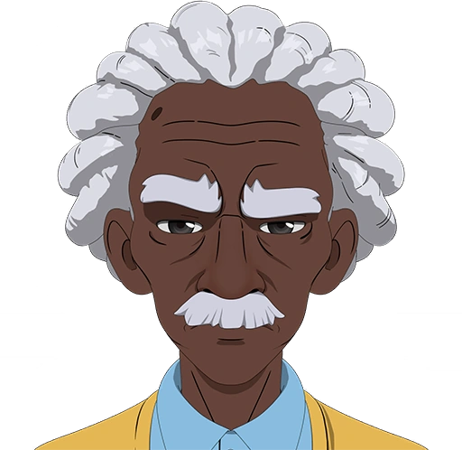
Chase
Rol: Ex-Héroe Velocista / Mentor Táctico
Antiguo héroe de súper velocidad y compañero de Robert. Tras colgar el traje, aporta su experiencia, visión estratégica y apoyo moral a la central de despacho para guiar al equipo.

DISPATCH es un thriller interactivo de simulación y gestión de emergencias que coloca al jugador en la piel de un operador de despacho estratégico. En una ciudad al borde del caos, cada llamada de auxilio exige evaluar prioridades, coordinar unidades sobre el terreno y tomar decisiones éticas complejas en cuestión de segundos. Tu capacidad de mantener la calma bajo presión determinará quién vive y quién muere.

Rol: Ex-Héroe Velocista / Mentor Táctico
Antiguo héroe de súper velocidad y compañero de Robert. Tras colgar el traje, aporta su experiencia, visión estratégica y apoyo moral a la central de despacho para guiar al equipo.
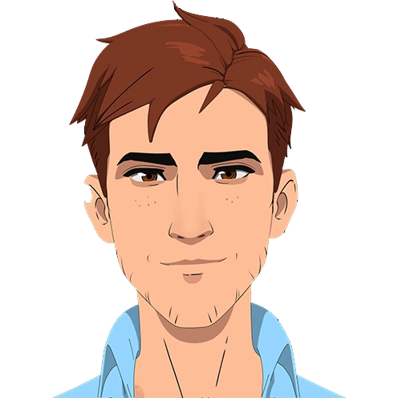
Rol: Protagonista / Operador de Despacho
Ex-héroe mecanizado obligado a retirarse del combate directo tras un grave accidente. Ahora lidera la consola de emergencias, coordinando a los héroes en tiempo real y gestionando crisis bajo máxima presión.
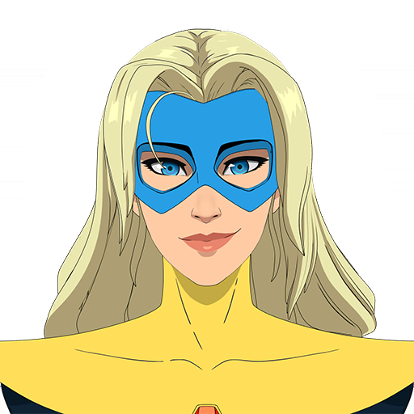
Rol: Coordinadora de Enlace / Héroe de Élite
Figura pública clave y nexo entre la agencia de despacho y el gremio de héroes. Se encarga de gestionar los protocolos de máxima prioridad y mantener la imagen del equipo.
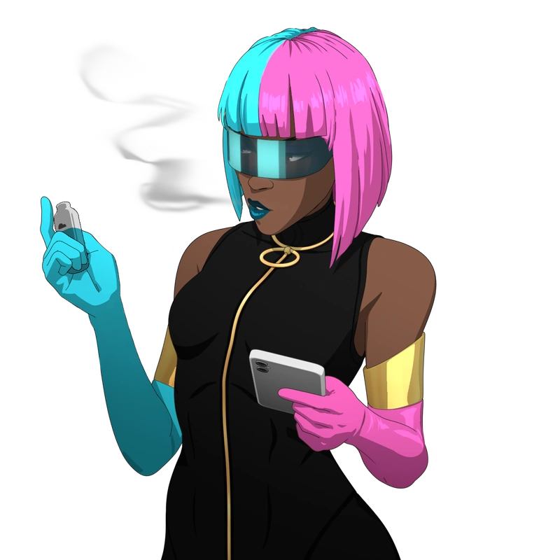
Rol: Especialista de Ilusión / Control
Manipulador de luz y reflejos, ideal para desorientar amenazas masivas, crear distracciones complejas y asegurar evacuaciones de civiles en zonas de alto riesgo.
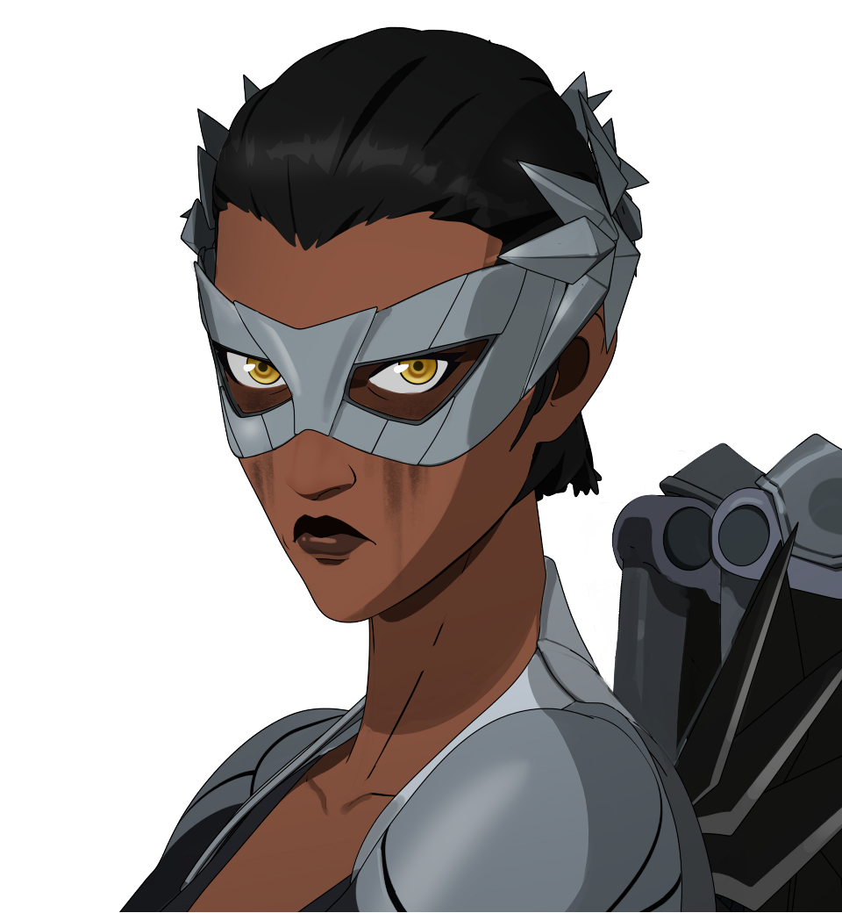
Rol: Unidad de Intercepción Rápida
Especialista en maniobras de alta velocidad. Es la unidad perfecta para persecuciones en entornos urbanos y neutralización de objetivos fugitivos en movimiento.
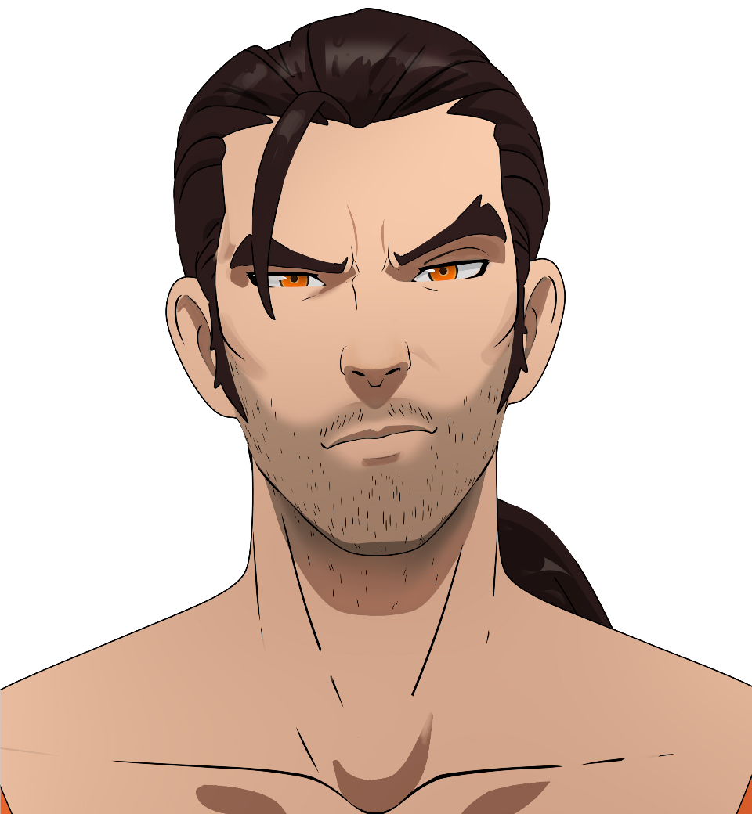
Rol: Control de Áreas y Ataque Pirotécnico
Héroe con capacidad de manipulación del fuego. Ideal para la supresión de grandes grupos de enemigos y la contención de amenazas masivas en zonas abiertas.
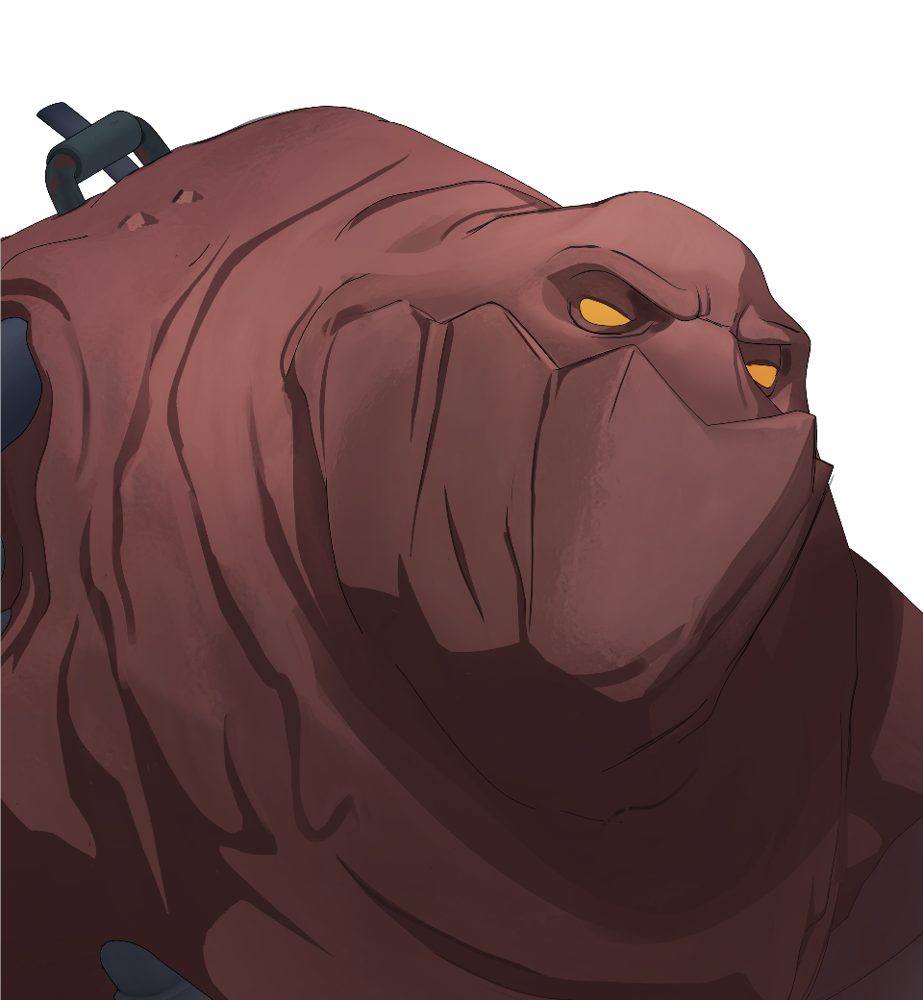
Rol: Tanque de Defensas pesadas
Gigante de resistencia colosal y fuerza bruta. Diseñado para absorber impactos de alto calibre, proteger a los civiles y servir de escudo ante colapsos estructurales.
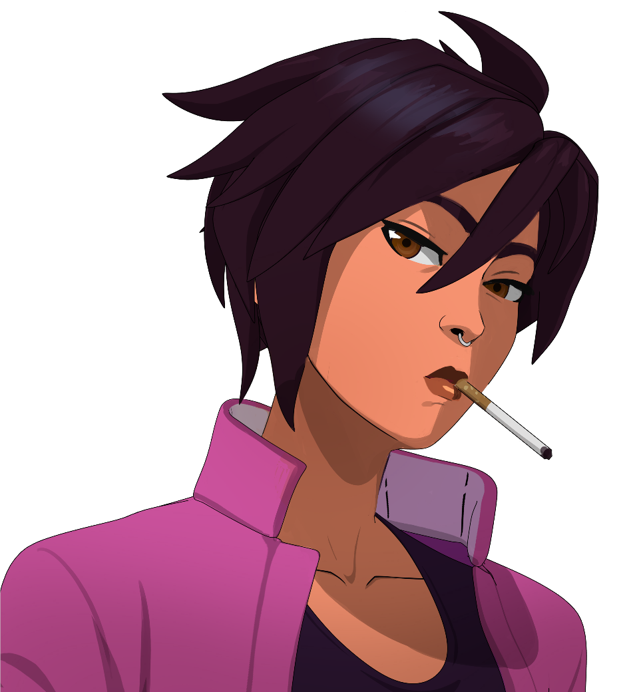
Rol: Infiltración Táctica
Especialista en camuflaje óptico e invisibilidad. Su habilidad permite realizar reconocimiento sigiloso y resolver situaciones de rehenes sin ser detectada antes del asalto.
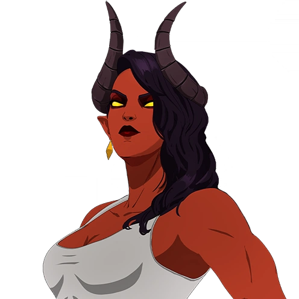
Rol: Disuasión y Combate Oscuro
Dominadora de energías sombrías y control mental de masas. Su presencia infunde pánico en las filas enemigas y neutraliza a los villanos más agresivos.
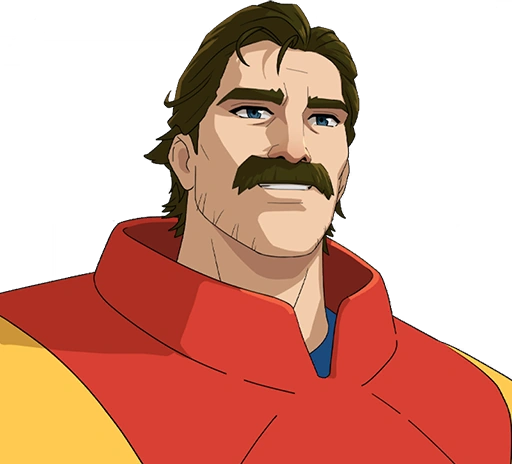
Rol: Héroe Aéreo Polivalente
Dotado de vuelo y fuerza sobrehumana. Es la unidad ideal para rescates a gran altitud, intercepción de amenazas aéreas y gestión de crisis urbanas a gran escala.
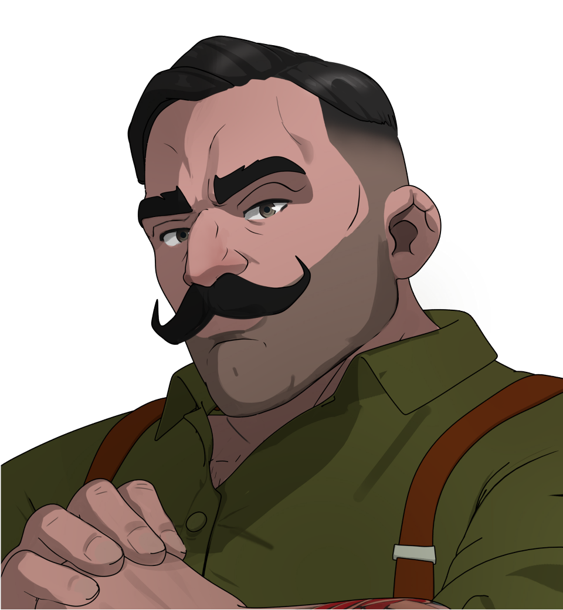
Rol: Asalto Pesado a Corta Distancia
Brawler especializado en combate cuerpo a cuerpo. Su fuerza desmedida le permite derribar barricadas, atravesar blindajes y despejar zonas de alto riesgo rápidamente.
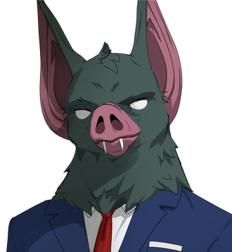
Rol: Acústico y Rastreo
Experto en ecolocalización y detección ultrasónica. Capaz de mapear estructuras blindadas y detectar la ubicación exacta de rehenes y enemigos a través de paredes.
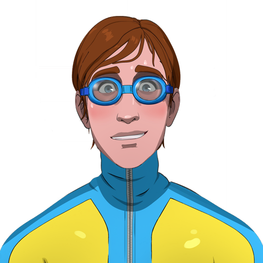
Rol: Control Acuático y Apoyo
Manipulador de agua capaz de sofocar incendios de gran magnitud, evacuar civiles atrapados en inundaciones y crear barreras de contención líquida.
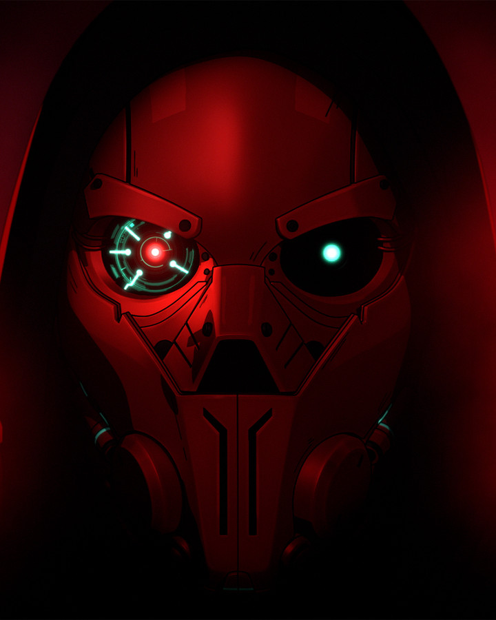
Rol: Antagonista Principal
Misterioso cerebro criminal que opera desde las sombras, orquestando los ataques sistemáticos y hackeos que ponen a prueba a toda la red de despacho de la ciudad.
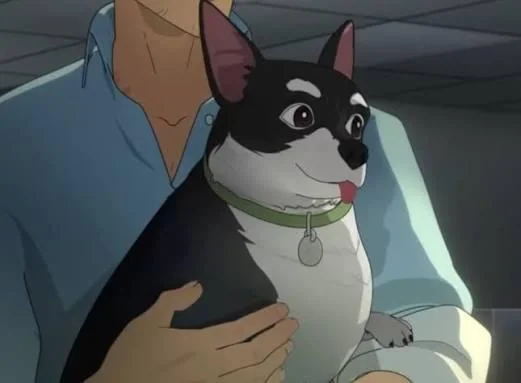
Rol: Apoyo Emocional / Mascota de la Central
El carismático compañero canino del equipo de despacho. Mantiene la moral alta en el centro de mando durante las jornadas más tensas y agotadoras.
Dispatch ha sido desarrollado por AdHoc Studio, un estudio independiente estadounidense fundado en 2018 por exveteranos de Telltale Games (creadores de The Walking Dead y The Wolf Among Us) junto a exmiembros de estudios como Night School Studio (Oxenfree) y Ubisoft. La compañía nació con el propósito de evolucionar el género de las narrativas interactivas y las decisiones ramificadas, siendo Dispatch su primer gran proyecto propio, un título que requirió siete años de desarrollo debido a su compleja estructura narrativa y a un doblaje de gran calibre encabezado por actores como Aaron Paul. Respecto a una posible segunda temporada, aunque el juego ha sido un rotundo éxito comercial y de crítica y el equipo creativo ha mostrado su entusiasmo por continuar la historia, actualmente no existe una confirmación oficial de una Temporada 2; además, el desarrollo de una secuela llevaría bastante tiempo debido a la enorme complejidad de gestionar las múltiples ramificaciones y finales acumulados en la primera entrega.